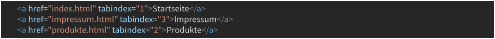
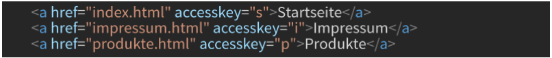

Grundsätze einer Applikation
- Klarheit
- Kompaktheit
- Vertrautheit
- Reaktionsfreudigkeit
- Konsistenz
- Ästhetik
- Effizienz
- Toleranz
Säulen der Barrierefreiheit
Accessibility
Darunter versteht man die Zugänglichkeit der Anwendung. Egal ob technische oder körperliche Einschränkungen, die Anwendung muss zugänglich für jedermann sein.
Usability
Klare Strukturierung sorgt für eine gute Benutzerfreundlichkeit. Eine Anwendung sollte sich an feste und etablierte Standards halten.
Für wen ist Barrierefreiheit wichtig?- Blinde Nutzer
- Gruppe der 50+
- Nutzer mit einer Rot-Grün-Sehschwäche
- Nutzer mit langsamer Internetverbingung
- Nutzer mit leerem Funkmaus-Akku
Hilfsmittel abseits vom Standard
- Vergößerungssoftware (Bildschirmlupe)
- Screen Reader
- Sprachsteuerung
- Spezialtastaturen
- Touchscreens
- Elektronische Steuerung
tabindex und accesskey
tabindex
Erleichtert das Navigieren mit der Tabulator-Taste. Legt die Reihenfolge fest in welcher die Hyperlinks ausgewählt werden.
accesskey
Hiermit lässt sich einem HTML-Element eine Zugriffstaste zuweisen, mit der es dann später über die Tastatur angesteuert werden kann.
